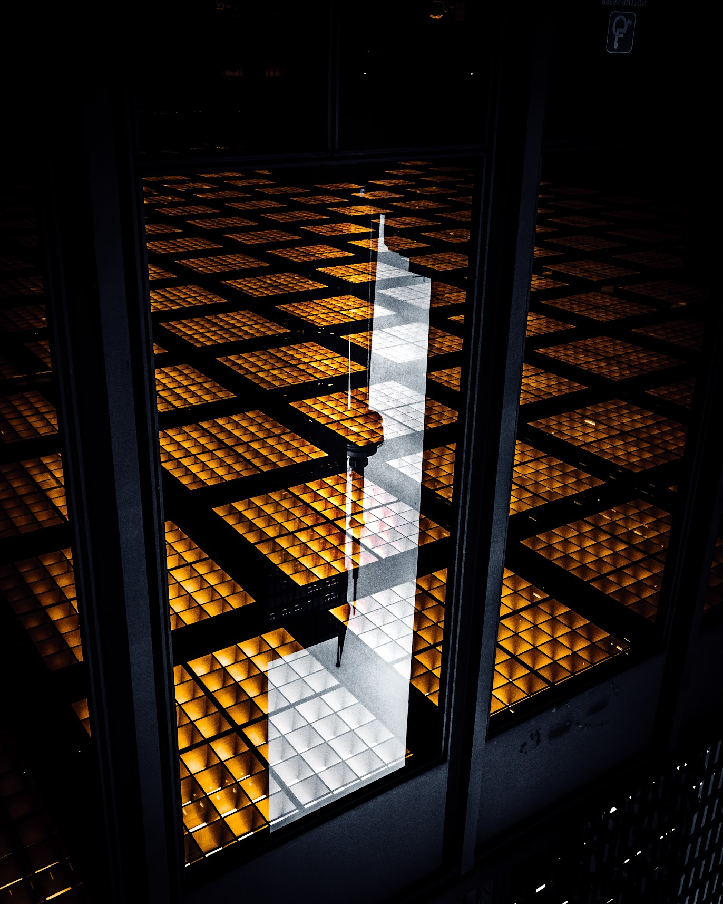

Work
SideQuests
2024
SideQuests is a social network connecting and exploring player experiences. Focused on the city of Toronto, events are packaged into playable 'Quests'.

As product lead, I was responsible for design, development and iteration of the platform. Launched web MVP in January 2024, iOS beta in September 2024.
Think of it like geocaching but for your experiences.


Open Concept Agency
2023 - 2024
A creative agency founded in Toronto offering bespoke advertising solutions to small businesses across the province.

Launched immediately after graduation, formalizing years of independent media production and consulting experience, providing quality media and relevance for small businesses online.
Campaign ideation, implementation, visual media production, copywriting, web development, marketing consulting
Media Consulting
2019 - Present
Began freelance media production career in 2019, beginning with photography services, expanding into commercial video production and advertisement design
Working with corporations, restaurants, venues, BIAs, artists, creators in Toronto and Kingston Ontario.
Photo and video production, graphic design, copywriting, campaign design, web development, search engine optimization